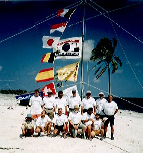
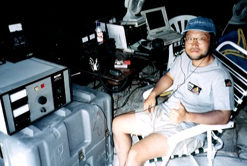
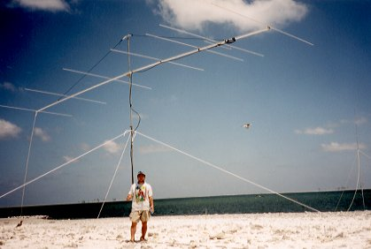
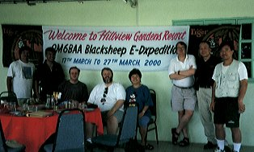
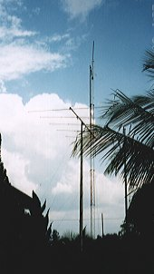
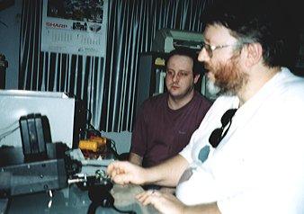
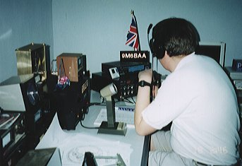
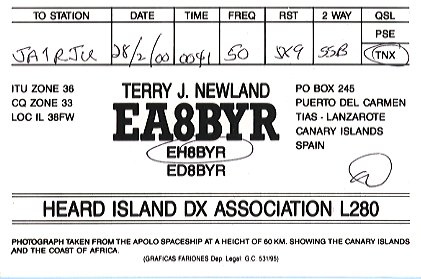

今サイクルの入感が"New"となったSpainのEH7KW
JAからのQSLが3日で届いたのは初めてだったと！
このリポートは 1エリアの入感状況です
全国版50MHz DX Clusterも参考にして下さい
TIME:UTC(JST-09:00)
Flash ! DX の読み方
【Back Issues Mar.2000】
31.Mar.2000(15:00a) *ZL-TV 02:00- 45.24/25/26-- *VK-TV 02:00- 46.172/240 -- *9M-TV 06:00- 48.240/260 -- FK1TK 06:40 50.120 SSB FK8CA 06:55 50.110 CW VK6JJ 07:03 50.110 CW VK4LR 07:14 50.110 SSB VK4FNQ 08:51 50.110 SSB VK4JH 08:52 50.110 CW FR1AN 08:57 50.110/120 SSB weak (FR5FM 09:06 50.150 SSB) 5B4FL 09:12 50.110/106 CW/SSB VK4ABW 09:33 50.110 SSB VK4APE 13:34 50.110 SSB 30.Mar.2000(15:00a) *ZL-TV 23:30- 45.24/25/26-- *VK-TV 23:30- 46.172/240 -- VK4GPS 08:57 50.110 SSB VK4AJS 09:00 50.110/150 SSB VK6RSX 09:25 50.304 CW Beacon VK4APE 10:06 50.110 SSB P29BPL 10:10 50.029 CW Beacon FK8CA 10:13 50.110 CW 3D2AG 10:29 50.105 CW H44PT 11:20 50.130 SSB DU1EGA 12:46 50.110 CW VK4FNQ 12:50 50.150 SSB DU1EV 12:59 50.110 SSB YF1OO 13:09 50.110 CW XW2A 14:03 50.110 CW 29.Mar.2000(15:00a) *EU-TV 23:00- 48.242/250 -- *VK-TV 06:20- 46.172/240 -- VK8RAS 06:25- 50.047 CW Beacon VK4AFL 07:15 50.110 SSB *9M-TV 07:30- 48.240/260 -- 9M2TO/B 07:30 50.005 CW Beacon VK4AJS 08:01 50.110 SSB HL2WA 09:42 50.110 CW VK4JH 10:08 50.110 SSB VK4APE 10:09 50.110 SSB P29BPL 10:12- 50.029 CW Beacon V73JK 10:14 50.110 SSB V73SIX 10:15- 50.014 CW Beacon VK4KK 10:23 50.110 CW 3D2AG 11:58 50.110/106 CW VK4CP 12:03 50.110 SSB H44PT 12:30 50.130 SSB QSX 10UP DU1EV 12:35 50.103 CW 28.Mar.2000(15:00a) 4W6UN 12:50 50.130 SSB P29BPL 13:20- 50.029 CW Beacon VK8RAS 13:01- 50.047 CW Beacon DU1EV 14:06 50.107 SSB 27.Mar.2000(15:00a) *VK-TV 04:30- 46.172/240 -- VK8RAS 04:44 50.047 CW Beacon VK4ABW 09:22 50.110 CW TX0DX 09:23 50.115 CW 5B4AGM 09:26 50.110 CW V73AT 09:28 50.110 CW *9M-TV 09:30- 48.240/260 -- 9M6BAA 09:45 50.108 CW V63AO 09:57 50.120 SSB 9V1UV 10:00 50.110/135 SSB VK4JH 10:04 50.110 CW H44PT 12:50 50.110 SSB XW2A 13:12 50.115 CW P29BPL 13:19 50.029 CW Beacon 4W6MM 13:25 50.110 CW 9M6GY 13:34 50.110/115 SSB 26.Mar.2000(15:00a) *VK-TV 01:00- 46.172/240 -- *ZL-TV 01:00- 45.24/25/26-- VK8MS 01:13 50.110 SSB VK4JH 09:03 50.110 CW TX0DX 09:00 50.115 CW VK4APE 10:12 50.110 SSB VR2ZXP 12:56 50.130 SSB BD7OH 13:03 50.120 SSB TX0DX 13:05 50.115 CW VR2KW 13:06 50.105 CW V73AT 13:27 50.110 CW 4W6UN 13:34 50.125 SSB BA7JG 14:13 50.135 SSB DU1EGA 14:20 50.152 SSB VR2ZYW 14:44 50.170 SSB VR2JK 14:49 50.159 CW VR2XAV 14:54 50.150 SSB ◎ FO0AAA(Clipperton Is)(26.Mar.2000) 3月2日から8日まで運用されたFO0AAA・Clipperton Is.のDX Peditionにメンバーの一人として参加 したJK7TKE・福井さんが、3月20日に無事帰国した。 FO0AAAの6m運用を担当した福井さんから報告によると、今回の6mの運用でQSO出来たのは南米を中心と した136局。残念ながらJAとのQSOは出来なかったが、何よりも意外だったのは最も多くのQSOが期待さ れた米国が一局もQSO出来なかった事。多くの局が注目し、距離的にも問題のないと思われていた米本 土の局が"全滅"だったことは、改めて6mの伝搬の難しさを思い知らされた感じ。 QSOエンティティーは13、南米以外ではKH6が3局QSO出来ただけだったと。(TNX JK7TKE/1)



25.Mar.2000(15:00c)
TX0DX 23:15 50.115 CW/SSB
*EU-TV 23:25- 48.250 --
*VK-TV 23:40- 46.172/240 --
*ZL-TV 23:40- 45.24/25/26--
ZL3TY 23:45 50.104 CW
*EU-TV 23:45- 48.242/250 -- Strong!
VK4AFL 00:06 50.110 SSB
*9M-TV 07:00- 48.240/260 --
XW2A 07:14 50.110/135 CW
EY8MM 07:27 50.110 CW
(VQ9PO 07:47 50.110 SSB JA2-)
9M6BAA 08:05 50.108/110 CW/SSB
(5B4AGM 08:26 50.110 CW JA6-)
EY8CQ 08:39 50.110 CW
UN3G 08:51 50.111 CW
VK4CLM 09:16 50.110/125 SSB
TX0DX 09:17 50.115 CW
VK4APE 09:38 50.110 SSB
9M2JKL 09:44 50.107 CW
VK6JQ 10:03 50.111 CW
*DU-TV 12:00 48.250 --
DU1EV 14:04 50.120 SSB
DU1EGA 14:30 50.125 SSB
24.Mar.2000(15:00d)
*EU-TV 22:15- 48.250 --
*VK-TV 22:15- 46.172/240 --
*ZL-TV 22:15- 45.24/25/26--
TX0DX 23:35 50.115 CW
FK1TK 01:32 50.110 SSB
TX0DX 03:35 50.115 SSB/CW
VK6JQ 08:18 50.110 CW
*9M-TV 08:20- 48.240/260 --
*DU-TV 08:20- 48.250 --
9M6BAA 08:27 50.108 CW
VK4JH 08:42 50.110 CW
VK4WDM 09:00 50.110 SSB
XW2A 09:02 50.110 CW
VK4CXQ 09:10 50.113 CW
VK4BLK 09:14 50.110 CW
P29BPL 11:55- 50.029 CW Beacon
VK8MS 12:03 50.110 SSB
VK8HF 12:05 50.110 SSB
V73AT 12:28 50.110 CW
YF1OO 12:30 50.110 CW
AH2DN 12:33 50.115 SSB
VK8RAS 12:35- 50.047 CW Beacon
VK4ABP 12:35- 52.346 CW Beacon
VK4RIK 12:35- 52.445 CW Beacon
VR2KW 12:50 50.105 CW
DU1EGA 12:54 50.120 SSB
XW2A 13:05 50.110/135 CW/SSB
VR2BG 13:35 50.095 CW
AH2DN 13:44 50.115 SSB
VR2K 13:56 50.160 SSB
TX0DX 13:30 50.106/135 CW
◎ FO0TOH(Marquesas Is)(24.Mar.2000)
JA1OEM・豊福さんは4月初旬にFO0・Marquesas IsのNuku Hivaから2週間程度のQRVを予定している。
3月28日に日本を出発、Tahitiで免許を受け取った後にMarquesasに向かう。
運用開始は早ければ4月1日頃になるが、運用場所がJAに対して良くない場合には場所の選定で若干遅
れることも考えられる。運用周波数は50.117MHz、オープンした際には50KHz程度のスプリット運用を
予定している。使用RIGはTS-60 & TS-50に4ele(6m)、ダイポール。QSLはJA1OEMへ。(TNX JA1OEM)
◎ BQ9P(Pratas Is)(24.Mar.2000)
CTARL(Chinese Taipei Amateur Radio League)によるPratas Isからの運用が予定されている。
今回も前回(1998年)同様、日・米・台湾の13人の合同チーム。運用期間は4月5日05:00zから4月12日
21:00zまで。160mから6mまでのオールバンド、オールモードで運用するが、6mの周波数は未定。
[参加メンバー] BV5AF.BV2EW.BV4DP.BV2VA.BV2KI.BV4AS.BV4FH.BV4ME.BV5CR.BV8BC
JA1JKG.K8PYD.WT8S
◎ 4W6/VK2QF(East Timor)(24.Mar.2000)
6mでアクティブにQRVしているVK2QF・Nevは4W6(East Timor)からのQRVを予定している。
コールサインは4W6/VK2QF。運用期間は3月29日(予定)から4月5日の01:00zまで。RIGは100Wに6ele。
同じ時期にHF帯で多国籍チームによる4W6DXの運用が行われるため、Nevは6mに集中して運用する。
QSLはVK2QF本人へのダイレクトのみ。
尚、QSL請求の際にはIRC一枚、又は"グリーンスタンプ"一枚程度の"援助"を希望している。
23.Mar.2000(10:00a)
9H1's 22:43- 50.110- SSB/CW
(9H1BT.9H1PA.9H5EE.9H1AD.etc)
EH7KW 22:46 50.120 SSB/CW
EH3ADW 23:00 50.103 CW
SV1DH/B 23:00- 50.090 CW Beacon
TX0DX 00:00 50.110 SSB/CW
*9M-TV 07:00 48.242/260 --
XW2A 08:12 50.135 SSB
9M6BAA 08:27 50.115/108 CW
TX0DX 08:45 50.110/115 SSB
*DU-TV 08:50- 48.250 --
*BY-TV 08:50- 49.750 --
VK6JJ 09:55 50.101 CW
VK4LR 09:58 50.130 SSB
22.Mar.2000(00:00a)
21.Mar.2000(12:00c)
*VK-TV 02:30 46.172/240 --
(PY5CC 05:00 50.110 CW JA6.JR6)
(PP1CZ 05:09 50.105 CW JA6.JR6)
VK4KK 05:19 50.110 CW
VK4WDN 05:10 50.110 SSB
(7Q7RM 08:37 50.110 CW JA6.JR6)
VK2PB 09:04 50.110/135 SSB
VK4ADC 09:11 50.100 CW
VK4ABW 09:19 50.110 SSB
VK4FNQ 09:21 50.110 SSB
VK4CXQ 09:23 50.120 CW/SSB
VK4JH 09:23 50.110 CW
9M6KL 12:09 50.110/130 SSB
◎ 朝のロングパスのヨーロッパはNG。九州南部、沖縄でPY、ZPが入感。
20.Mar.2000(15:00d)
*EU-TV 22:20- 48.250/242 --
9H5EE 22:39 50.110 SSB
9H1BT 22:50 50.130 SSB
9H5IP 22:50 50.120 SSB
9H1XT 22:56 50.105 SSB
IT9RZR 23:05 50.170 SSB
9H1EE 23:09 50.160 SSB
9H1BT 23:20 50.120 SSB QSX 50.115-120MHz
IT9CVO 23:23 50.130 SSB
(EA3ADW 23:25 50.110 SSB JA2-)
*VK-TV 02:30 46.172/240 --
V73AT 03:47 50.110 CW
VK4APG 04:33 50.110 SSB
VK6WU 05:14 50.110 CW
VK4PU 05:15 50.110 SSB
VK4KJL 05:49 50.110 SSB
*9M-TV 05:40 48.240/260 --
XW2A 05:50 50.110/135 CW/SSB
FR1AN 08:40 50.110/120 CW/SSB
FR1GZ 08:55 50.115 SSB
9M6BAA 09:03 50.115 CW CQ EU
9M6BAA 13:30- 50.115 SSB JA's QSO
HL1LTC 14:29 50.115 SSB
◎ 朝のロングパスのヨーロッパがFB。9H1、IT9/I、SV、5B4、EAなどが入感していたが、1エリアでは
IT9と9H1だけ？。
◎ 9M6BAA(East Malaysia)(20.Mar.2000)
東マレーシアのコタ・キナバル(Kota Kinabalu)から運用していた9M6JU、9M6KETに引き続いて18日
からQRVを始めた9M6BAAは、英国のUKSMGのメンバーによる運用。
9M6BAAの運用場所はSabah州KeningauのHillview Gardens Resort。
ここは9M6AACのシャックと、9M6SMC(50.015MHz)のビーコンが設置されている場所でも知られる。
Keningauの町は、海辺の都市コタ・キナバルから120Kmほど南方向に位置する内陸部のリゾート地。
現地までの道路は整備されているものの、海抜2,000mほどの山越えの曲がりくねった道を2時間半ほど
走らなければならない。
9M6BAAのメンバーはG4MJS(Peter)のほか、G6YIN(John)、G4SHF(Stephen)、G4XUM(Martin)の4人。
6mの運用は主にG6YINとG4MJSが担当、G4SHFはHFの運用と9M6BAAのQSLマネジャーとなっている。
われわれ(9M6JU=JA1RJU、9M6KET=JS6BLS)が訪れた3月18日の時点では、G4XUMはまだ到着していなか
った。


9M6BAAを囲んで9M6AAC Staffと9M6JU、9M6KET／6mの6EL。後方のタワーに6M7JKVが上がる
一行は前日(17日)の夜に現地入り、18日の午前中にはさっそく9M6AAC側が用意したクッシュ・クラフ トの6エレで6mの運用を始めた。 この6エレは1998年2月にスプラトリーから運用した9M0Cのメンバーが、Pediの終了後にこのリゾート・ ホテルに滞在した際、9M6AACにプレゼントしたもの。以後、このホテルに滞在して9M6AACから6mを運用 する訪問者にはこのアンテナが用意される。 9M6BAAの6mの運用に対する意気込みは"気合い"が入っていて、FT-847にHENRY-2006のリニアーアンプ。 アンテナはM2社の6M7JKV(7EL)を本国から持ち込んで張り切っている。 今までにない強力な信号がJAでも聞こえる事と思われるが、彼らのQSOの"ターゲット"はヨーロッパ！。 われわれが訪問していた18日の昼過ぎ、50.115MHzのビーコンにJA7の局が呼んで来て初QSOが成功し たが、その直後にホテル全体が停電してしまう"アクシデント"で、初日は早々とQRT。 この時点では、まだM2は組み立てを終えただけで庭のテーブルの上に置かれていた。午後からこのホテ ルで"最も高い"タワーに上げられた。 9M6BAAの運用に関する情報はインターネットのホームページで紹介されている。特に「Shack Cam」 はオペレーティング・ルームの様子がリアルタイムで写し出されていて面白い。


6mを運用するG4MJS(手前)とG6YIN／HFを運用するG4SHF
◎ JY9NX(Jordan)(20.Mar.2000)
ヨルダンからアクティブにQRVしているJY9NX・田原さんは、50.097/50.150MHzのスプリット運用で
JAとのQSO数を伸ばしている。 田原さんのHomepageによると、50.097MHzは東南アジア方面からのバ
ズが多いので、今後は50.093MHzでビーコンの送信を行うとのこと。受信周波数は従来通り50.150MHz。
13.Mar-19.Mar.2000(00:00a)
◎ 3月13日から19日まで、9M6JUの運用のため[Flash ! DX]の入感リポートの更新は休止しました。
12.Mar.2000(14:00g)
*VK-TV 23:00- 46.172 --
*ZL-TV 23:00- 45.24/25/26--
LU3EMK 23:32 50.106 CW
PU3WPA 23:37 50.107 CW/SSB
VK4KK 00:04 50.110 SSB
CX4AAJ 00:26 50.120 SSB
LU2FFD 00:33 50.110 SSB
CX1DDO 00:38 50.125 SSB
KH6SX 00:40 50.110/103 CW
AH6TM 00:46 50.110/120 SSB
WH6O 00:47 50.115/140 SSB
KH6HME 01:00 50.061 CW Beacon
*DU-TV 01:20- 48.250 --
*9M-TV 01:20- 48.240/260 --
9M6SMC 03:00- 50.015 CW Beacon
VK4FNQ 04:54 50.110 SSB
VK4JH 06:29 50.110 CW/SSB
VK8RAS 08:15 50.047 CW Beacon
9M2XA 09:24 50.110 SSB
V73AT 09:27 50.110/101 CW
V73SIX 09:30- 50.014 CW Beacon
VK6JQ 09:48 50.112 CW
◎ 今日も早朝から南米のオープンで賑わった。しかし、聞こえているエリアに差があり、PU3WPAを
除き入感している時間は短く、不安定。ハワイは久しぶりに強力に入感。
◎ 昨日、西日本を中心にFBに入感していたスリランカの4S7YSG・佐竹さんからの連絡によると、こ
の日のオープンでJA1、2、3、4、5、6、7、9エリアの70局とQSOしたと。佐竹さんは一週間ほど日本
に滞在、3月21日にスリランカへ戻る。
11.Mar.2000(15:00f)
*VK-TV 23:00- 46.172/240 --
*ZL-TV 23:00- 45.24/25/26--
*CE-FM 23:30- 47.9/48.3 -- CE-Music(XQC-10/XQC-155)
CX2AAL 23:48 50.110 SSB
LU9EHF 23:50 50.120 SSB
LU3EMK 23:53 50.115 SSB
CE3SAD 23:54 50.130 SSB QSL Direct only
CX2LI 23:55 50.145 SSB
CE3BFZ 00:00 50.125 SSB 00:10z F.OUT
*VK-TV 00:00- 46.172/240 --
*ZL-TV 00:00- 45.24/25/26--
*9M-TV 01:30- 48.240/260 --
VK4CAW 03:25 50.110 CW
VK4KK 03:28 50.110 SSB
VK4RGG 03:28- 50.058 CW Beacon
VK4BRG 03:50- 50.077 CW Beacon
VK8RAS 04:00- 50.047 CW Beacon
VK4JH 04:17 50.110/140 CW/SSB
VK4PU 04:43 50.110 SSB
FK8VHM 07:45 50.104 CW
9M2NK/P 07:40 50.107 CW
(4S7YSG 07:58 50.110 CW JA6.JR6)
FK1TK 08:00 50.150/210 SSB
FR1AN 08:30 50.120 SSB
(7Q7RM 08:58 50.110 CW JA6.JR6)
5R8EE 09:20 50.115 SSB
4S7YSG 09:25 50.130 CW/SSB
(Z22JE 09:29 50.115/110 SSB JA6.JR6)
VK6JQ 10:02 50.111 CW
JY9NX 10:13 50.097 CW QSX 50.150
9M2NK/P 14:34 50.107 CW
9M6SMC 14:36 50.015 CW Beacon
9M2KT 14:43 50.110 SSB
◎ 午前中に1エリアでは久しぶりの南米の入感で賑わった。夕方に入感していた9M2NK/P・中村さん
は、9M2(西マレーシア)の南シナ海側のトレンガヌ州からQRVしているもの。
普段、TVのバズの妨害を受けるクアラルンプールを離れ、11日、12日の両日だけ運用する。
◎ 昨日、西日本を中心に、1エリアまでオープンしたJY9NX・田原さんからの連絡によると、昨日は
QSO中でも呼んでいる局が多かったので、パイルアップによる近接局からの混信を避けるため、次回
からのオープンでは大幅なスプリット運用を行うと。
現在、JY9NXの運用周波数は50.097MHzだが、オープンが確認されたら、50.150MHzを受信する。

10.Mar.2000(15:00j)
(CX.LU's 23:20- 50.110- CW/SSB JA8-)
*EU-TV 23:30- 48.250/242 --
EH7KW 23:35 50.091 CW
EH7JX 23:52 50.125 CW
*EU-TV 00:00- 48.250/242 --
*VK-TV 00:00- 46.172/240 --
*ZL-TV 00:00- 45.24/25/26--
+EH7KW 00:25 50.091 CW
(EH3ADW 00:25 50.102 CW JA3-)
(CT1DYX 00:25 50.130 SSB JA2-JA6.JR6)
(PP1CZ 00:30 50.107 CW JA2-JA6.JR6)
VK4FNQ 01:25 50.110/130 SSB
VK4JH 01:27 50.110 CW
VK2FET 02:49 50.110 CW
VK4RGG 02:56- 50.058 CW Beacon
VK4BRG 02:56- 50.077 CW Beacon
VK4KK 03:03 50.110 SSB
VK4AFL 03:06 50.110 SSB
VK2KYP 03:09 50.110/130 SSB
9M-TV 03:15 48.240/260 --
9M2TO/B 03:30- 50.005 CW Beacon
VK8RAS 04:26- 50.047 CW Beacon
FR1AN 08:57 50.120 SSB
5B4FL 09:18 50.105 CW JA1-JA6
(JY9NX 09:40 50.097 CW JA1.2.3.4.5.6.9)
VK4FNQ 11:39 50.110 SSB
P29BPL 13:07 50.029 CW Beacon
(Z22JE 12:45 50.111 SSB JR6-)
YF1OO 13:10 50.101 CW
9M6KL 14:20 50.120 SSB
9M6SMC 14:45- 50.015 CW Beacon
◎ 昨夜(深夜？)の南西方向からのロングパスに続いて、今朝は早い時間からヨーロッパのロン
グパスが復活した。 EUのTVが強力だった割りに、50MHz帯の信号は弱い。
夕方、09:00z頃から入感したFR1ANに続いて、南西のスキャッターで5B4FL、JY9NXがオープン。
このオープンは西日本では良く聞こえていた様だが、1エリアでは信号も弱く、関東南、東部の
局がかろうじてパイルアップに加われる程度。 昨夜と言い、今日と言い、今サイクルのDX伝搬
は1エリアには"最悪"のパターン。
◎ JY9NX・田原さんからのリポートによると、今日のオープンでJA1、2、3、4、5、6(沖縄を除)、
9エリアの41局とQSO出来たとのこと。 JA1(1局!)、2、3、9は初QSO。他にも10局ほどコールサイ
ンがコピー出来たがQSOに至らなかったと。明日も同じ時間にQRVを予定している。(TNX JY9NX)
09.Mar.2000(16:00m)
(CX.LU's 22:10- 50.110- CW/SSB JA7-8)
(CV1Z.CX1DDO.CX8BE.LU2FFD.LU9EHF.LW3EBJ.etc)
*VK-TV 23:30- 46.172 --
*ZL-TV 23:30- 45.24/25/26--
*VK-TV 23:30- 46.172/240 --
*ZL-TV 23:30- 45.24/25/26--
VK4APG 00:25 50.100 CSB
VK4RGG 00:30- 50.058 CW Beacon
9M-TV 02:00 48.240/260 --
VK6RSX 02:50- 50.304 CW Beacon
VK4JH 03:42 50.110/145 SSB
VK8RAS 03:47- 50.047 CW Beacon
VK4DHF 03:53 50.110/115 CW
VK4AJS 03:54 50.110 SSB
VK4ABW 04:45 50.110 SSB
VK4AFL 05:09 50.110 SSB
VK6JQ 08:30 50.110 CW CQ EU
VK4BLK 08:47 50.110 CW
V73SIX 09:19 50.014 CW Beacon
V73AT 09:38 50.110 CW
(5B4FL 09:47 50.110 CW JA1-6) SC
DU1EV 11:53 50.110/115 SSB
9M6SMC 11:55- 50.015 CW Beacon
VK4FNQ 12:10 50.110 SSB
VK4ABW 12:12 50.115 SSB
DU1EGA 12:17 50.100 CW
VK8MS 12:30 50.110 SSB
YV4AB 13:00 50.025 CW Beacon
YB0CBI 13:45 50.115 SSB
HP3XUG 14:40 50.101/105 CW/SSB
+HP3XUG 15:00 50.130 SSB QSX UP5-15
TI5KD 15:40 50.125 SSB QSX 50.130/142
◎ 早朝にJA8、7エリアでCX、LUなど南米の入感がリポートされていたが、1エリアでの入感は確認
出来なかった。午前中のEU/AFのロングパスも無い。 沖縄、南鹿児島でも朝のロングパスは入感し
ていないが、午前中のPYのショートパスと夜間のHP3XUGのロングパスは相変わらず入感している。
◎ ロングパスでYV4ABが入感してきた直後の13:30z頃からパナマのHP3XUGが13:30zから入感し始
めた。最初は聞こえなかった信号も、14:00z頃から東日本でもコンデションが上昇。
HP3XUGはJA'sのパイルアップを周波数を変えながらスプリットで捌いていた。
15:00z頃から1エリアでもQSOが出来るまでに信号は上昇してきたが、直後に50.125MHzでQRVしてき
たTI5KDがUP5を指定。この周波数が、HP3XUGと同じ50.130MHzだったため、TI5KDをコールするJA's
でHP3XUGは潰されてしまった。
この日、TIはTI5KD、TI2HLなど数局QRVしていたが1エリアまでコンデションは上昇して来なかった。
08.Mar.2000(14:00i)
(CX.LU's 22:40- 50.110- CW/SSB JA8-)
*VK-TV 23:30- 46.172 --
*ZL-TV 23:50- 45.24/25/26--
*EU-TV 00:00-10 48.250 -- L.P weak
VK4FNQ 00:28 50.110 SSB
*9M-TV 02:30- 48.240 --
*DU-TV 02:30- 48.250 --
9M2TO/B 02:45- 50.005 CW Beacon
VK4KJL 03:08 50.110 SSB
VK4BRG 03:39- 50.077 CW Beacon
VK4RGG 03:39- 50.058 CW Beacon
VK8RAS 03:40- 50.047 CW Beacon
*VK-TV 07:00- 46.172 --
*9M-TV 07:00- 48.240/260 --
*DU-TV 07:00- 48.250 --
VK6RSX 07:00- 50.304 CW Beacon
9M6SMC 07:10- 50.015 CW Beacon
9M2TO/B 08:14- 50.005 CW Beacon
VK8RAS 08:16- 50.047 CW Beacon
VK4KK 08:19 50.110 SSB/CW
KH2KU 12:00 50.120 SSB
P29BPL 12:05- 50.029 CW Beacon
VK8MS 12:46 50.110 SSB
VK4ABW 12:54 50.120 SSB
V73SIX 13:54 50.014 CW Beacon
(HP3XUG 14:58 50.110 CW/SSB JA6-JR6) L.P
◎ [FO0・Clipperton Pedi(5)]
W9SZからの連絡によると、PaketClusterを通じてFO0AAA(Clipperton Is)の6mのアンテナは既
に撤去されたとの情報が流れている。(TNX JF2MBF)
撤収開始は3月8日15:00z(日本時間9日00:00JST)からの予定だったが、"マイナー"なバンドから
徐々に撤去を始めているものと思われる。
今回は残念ながらJAとのQSOは無かったが、100局を超える6mのQSOに活躍したJK7TKE・福井さん、
"お疲れさま"でした。
07.Mar.2000(15:00i)
*ZL-TV 23:30- 45.24/25/26--
*VK-TV 23:30- 46.172/240 --
VK8RAS 00:45- 50.047 CW Beacon
*9M-TV 02:00- 48.240/260 --
*DU-TV 02:00- 48.250 --
(PY2XB 02:10 50.110 CW JA6-JR6)
(PY5CC 02:15 50.110 SSB JA6-JR6)
(KH6HME 03:28- 50.061 CW Beacon JA6-JR6)
VK4LR 04:06 50.110/130 SSB
VK4CXQ 04:30 50.130 CW
VK4JH 04:37 50.110/130 SSB
VK4BRG 06:16- 50.077 CW Beacon
VK4RGG 06:16- 50.058 CW Beacon
(FR1AN 07:16- 50.110/120 SSB JA6-JR6)
VK4KR 09:26 50.150 SSB
VK4FNQ 11:55 50.120 SSB
P29BPL 11:55 50.029 CW Beacon
VK6RSX 11:58 50.304 CW Beacon
(HP3XUG 14:35- 50.110 SSB JA6-JR6) L.P
◎ 2月28日以来、連日入感していた朝のヨーロッパのロングパスも、今日は沖縄でも入感が無く、
8日間続いた"記録"も途切れた。
それでも午前中に沖縄、鹿児島南部からPY、KH6、午後からFR1AN、夜のロングパスでHP3の入感が
報告されており、沖縄と本土とのコンデションの違いがあらためて知らされた。また深夜には沖縄
から9U5D(Burundi)とのQSOも報告されている。 9U5Dは昨年10月17日以来、今回で2度目の入感と
なる。

06.Mar.2000(14:00h)
*ZL-TV 23:30- 45.24/25/26-- weak
*VK-TV 23:30- 46.172/240 -- weak
(9H1PA 00:28- 50.140/105 CW JA1-JA6-JR6)
(EH7KW 01:15- 50.100/105 CW JA2-)
VK4PU 03:09 50.110 CW
VK2YHN 03:54 50.110 SSB
9M-TV 05:00- 48.240/260 --
VK4CP/B 05:08 50.051 CW Beacon?
VK4BRG 05:09- 50.077 CW Beacon
VK4RGG 05:09- 50.058 CW Beacon
VK8RAS 05:09- 50.047 CW Beacon
VK4LR 05:28 50.130 SSB
VK6JJ 05:29 50.110 CW
VK6RO 05:42 50.110 CW
VK4CRO 05:44 50.110 SSB
VK4DV 05:49 50.110/140 SSB
VK4AFL 05:50 50.110 SSB
9M2TO/B 06:55 50.005 CW Beacon
VK6ZAY 09:21 50.110/120 SSB
VK6RPH 09:25 50.066 CW Beacon
VK6RO 09:27 50.110 CW
VK6AOM 09:31 50.110 SSB
V73AT 10:09 50.110 CW
VK4ABW 10:12 50.110 CW
VK4JH 10:18 50.110 CW
VK8KTC 12:22 50.110 SSB
DU1EV 13:52 50.115 SSB/CW
(9U5D 17:58 50.110 CW/SSB JR6-)
◎ 期待された朝のロングパスは弱い9H1PAの入感が確認されただけ。同じエリアでも入感に大きな
地域差があった。連日のJAとのオープンでヨーロッパ側でもアクティビティが上がってきているが、
今日もEA9IB(Ceuta & Melilla)がインターネットを通じて50.160MHzでのJA向けQRVを伝えてきた。
◎ [FO0・Clipperton Pedi(4)]
連日のEU/AFとのロングパスのオープンと、東方向のコンデションの落ち込みで、JAの6mではい
ま一つ盛り上がりに欠けるFO0AAA(Clipperton Is)だが、HF帯では着々とQSO数を伸ばしている。
5日に発表されたFO0AAAのBulletinによると、予想されたよりも6mのコンデションは悪く、今のと
ころ南米など、南方向とのQSOが主体でQSO数も約100にとどまっていると。
全体的には終了までに70,000 QSOを目指して頑張るとの事だが、6mでも1992年の記録を超えられ
るのか、そしてJAとのQSOが成功するのか、大いに興味の有るところ。
3月8日15:00z(日本時間9日00:00JST)から撤収を開始、3月9日00:30z(日本時間9日09:30JST)に
離島する予定。
05.Mar.2000(15:00k)
*CT-TV 23:15- 48.242/250 -- Long path
(9H1BT 23:30 50.103 CW JA3-)
EH7KW 23:30 50.100 CW UP5
EH7AH 23:51 50.118 SSB
CT3HF 00:04 50.145 SSB 00:28 OFF!?
EA8/EH5CPU 00:08 50.115 SSB
*ZL-TV 01:30- 45.24/25/26--
*VK-TV 01:30- 46.172/240 --
*9M-TV 03:00- 48.240/260 --
VK2PB 05:32 50.110 SSB
VK2DN 05:43 50.110 CW
VK2ZER 05:49 50.110 SSB
VK2QF 05:51 50.110 CW
VK3DUT 06:01 50.110 SSB
VK2YO 06:02 50.110/140 SSB
VK3DQJ 06:25 50.100 CW
VK4ARN 06:26 50.120 SSB
VK4XA 06:35 50.100 CW
VK8RAS 06:35- 50.047 CW Beacon
VK4RGG 06:35- 50.058 CW Beacon
VK4CV 06:53 50.110 SSB
9M2NK 07:10 50.107 CW
VK4KK 07:13 50.110 CW
(4S7YSG 08:00- 50.110 CW JA6-)
(LU2NI 08:14 50.110 SSB JA6.JR6-)
9V1JA 08:53 50.085 CW
(8Q7DY 09:00 50.110 CW JA6-)
+9M2NK 09:18 50.107 CW
VK6HK 09:26 50.110 CW
VK8RAS 09:28- 50.047 CW Beacon
VK6RPH 09:28- 50.066 CW Beacon
VK6RSX 09:28- 50.304 CW Beacon
VK4JH 09:35 50.110 CW
VK6AOM 09:36 50.110 SSB
V73AT 09:45 50.110/140 CW/SSB
P29BPL 11:54 50.029 CW Beacon
AH0P 12:00 50.115 SSB
WH7C/DU3 12:02 50.115 CW
+V73AT 12:05 50.110/106 CW
VK4CXQ 12:06 50.100 CW
VK8MS 12:15 50.110 SSB
9M2TO 12:26 50.110 CW VK's QRM
VK4ABW 12:28 50.110 SSB
YV4AB 12:58 50.025 CW Beacon
BG7NQ 12:58 50.108 CW
YC1MH 13:23 50.110 SSB
BX2AB 14:48 50.100 CW
◎ 今日は早々と48MHz帯のEUのTVが入感、23:30z頃からEH(EA)のパイルが始まった。
昨日JAと多数(71!)QSOしたEH7KWが今日も50.100MHzのCWで入感、UP5でJAのパイルを捌いていた。
EAのコンデションが落ちると同時にCT3HF(マデイラ)が聞こえだした。信号が強い分だけJAのパイ
ルも凄く、コンデションが上昇してきた00:28z頃にQRT(QSY?)してしまった。
今日のロングパスのオープンは、昨日とは異なり西日本(JA3、2付近)から開き始め、徐々にコンデ
ションが北上する"パターン"だったため、1エリアではかなり遅れて入感した。
夜間に昨日同様YV4ABのビーコンが入感していた。"ロングパス騒ぎ"の内容は後ほど判明する？。
04.Mar.2000(15:00h)
*CT-TV 00:00- 48.242/250 -- Long path
EH7JX 00:05 50.105 CW ↓
EH7KW 00:06 50.109/100 CW
EH7AH 00:11 50.112 SSB
+EH7KW 00:17 50.100/140 SSB QSX 50.140
(EH8EE 00:36 50.115 SSB JR6-)
+EH7KW 00:55 50.100 CW
EH8BYR 01:11 50.115 SSB
(EH3ADW 01:24 50.103 CW JA3-)
*ZL-TV 01:30 45.24/25/26--
*VK-TV 01:30- 46.172/240 --
(EA8/EH5CPU 01:46 50.120 SSB JA2-)
VK4APE 11:13 50.110 SSB
VK4ABW 11:15 50.110 SSB
VK6RSX 11:16 50.304 CW Beacon
P29BPL 11:17 50.029 CW Beacon
VK4DHF 11:19 50.108 CW
WH7C/DU3 11:55 50.120 SSB
V73AT 11:57 50.120/102 SSB/CW
V73CW 11:58 50.120 SSB
V73SIX 11:59 50.014 CW Beacon
DU1EGA 12:06 50.130 SSB
VK4JH 12:11 50.110 CW
YV4AB 12:36- 50.025+ CW Beacon "DE YV4AB..." LP 230 deg
YC1MH 12:59 50.115 SSB
VK8KTC 12:59 50.135 SSB
(HK3YH 13:40 50.105 CW JA2-JR6)
HP3XUG 14:33 50.100 CW JA6.JR6-)
◎ 待望のロングパスによるヨーロッパが昨日の南鹿児島、沖縄に続いて、今日は1エリアを含む
JA本土にもオープンした。
00:00z頃から48MHz帯のEU(CT)-TVが上昇するのとほとんど同時に、昨日も入感したEH7KWを始
め数局のEH(Spain)、EH8(Canary Is)が入感してきた。
とくに50.100MHzのCW/SSBで入感したEH7KW・Joseは強力で、SSBでは50.100/140MHzのスプリッ
トで捌いてくれたため、多くのJA'sがQSOに成功した。1エリアでは00:30z頃から急激にコンデシ
ョンは落ちてしまったが、西日本では引き続きQSOが出来ていた。
EH7(Spain)と入れ替わる様に入感してきたEH8BYRなどCanary諸島は、1エリアでは信号も弱く、
呼べる状態ではなかった。
◎ 午後のコンデションは落ち込んでいたが、夜間になって上昇、VK4's、DU'sなどが入感してい
た12:35z頃から南米・ベネズエラのYV4ABのビーコンがロングパス(ANT 220-230度)で入感してき
た。"DE YV4AB...DE YV4AB.."の繰り返しの信号は、少し上で出ていたP29BPLのビーコンと間違
えるほど、良く聞こえていた。 1エリアではこのビーコンは10数分程で聞こえなくなったが、こ
の直後に西日本から沖縄にかけてHK3YH(コロンビア)、HP3XUG(パナマ)が入感、QSO出来ている。
YV4ABのビーコンは、1992年3月にもロングパスで強力に入感したことがあるが、この時にはビー
コンがフェードアウトした後に、P4、PJ2などの"カリブ海"がオープンしている。
尚、6mでのHKとのQSOはJAから初めて。
朝のヨーロッパ、夜間の南米と、ロングパスには当分"要注意"。
03.Mar.2000(14:00n)
*VK-TV 00:00- 46.172 --
(EH7KW 00:58 50.100 CW JH7VEP/6.JR6's)
(CT1DYX 01:13 50.140 SSB JR6HI.JR6's)
*ZL-TV 01:00 45.24/25/26--
*VK-TV 02:00- 46.172/240 --
VK8RAS 02:55- 50.047 CW Beacon
VK4RGG 02:55- 50.058 CW Beacon
VK4BRG 02:55- 50.077 CW Beacon
VK4KK 03:03 50.110 SSB
VK4LR 04:03 50.110 SSB
VK4KR 05:04 50.110/130 SSB
VK4AFL 06:17 50.110 SSB
VK4DMI 06:47 50.110 SSB
VK6RSX 06:58- 50.304 CW Beacon
VK2BA 07:04 50.110 SSB
*9M-TV 07:10- 48.240/260 --
*DU-TV 07:10- 48.250 --
9M2TO/B 07:20- 50.005 CW Beacon
(S21YJ 08:20 50.110/115 SSB JA6.JR6- )
VK4KK 08:50 50.110 SSB
VK6JR 09:23 50.110 CW
V73AT 09:28 50.110 SSB
V73SIX 09:28- 50.014 CW Beacon
VK4APG 09:33 50.110 CW
VK2PB 09:44 50.110/130 SSB
VK6RPH 09:45- 50.066 CW Beacon
VK4JSR 09:47 50.110 SSB
VK6TQ 09:49 50.110/125 SSB
VK6JR 09:54 50.125 SSB
VK6HK 09:55 50.125 SSB
VK4FNQ 11:46 50.130 SSB
VK4APE 11:46 50.135 SSB
VK4ABP 11:47 52.346 CW Beacon
VK4RIK 11:47 52.445 CW Beacon
DU1EV 12:12 50.115 SSB
BA7IA 12:29 50.110 CW
BA7JG 12:36 50.120 SSB
VR2DXA 12:36 50.140 SSB
DU1EGA 12:42 50.125 SSB
BD7NQ 12:44 50.106 CW
BG7OH 12:49 50.135 SSB
VR2PM 12:50 50.180 SSB
VR2ZHY 12:51 50.170 SSB
VR2LC 12:58 50.160 SSB
HL3IUA 13:18 50.110 CW
9M6SMC 13:59 50.015 CW Beacon
◎ 2月28日のアフリカのEH8/CT3に続いて、遂にサイクル23初のロングパスによるヨーロッパが
オープンした。初QSOとなったのはスペインのEH7KW。
鹿児島県・与論島に移動しているJH7VEP/6・小原さんが、00:58zに50.100MHzのCWでCQを出し
ていたEH7KWとQSOしたもの。その後、沖縄でもこの局とQSO、さらに同時にオープンしていたポ
ルトガルのCT1DYXともQSOに成功している。
EH(EA)との6mでのQSOは今回が初めてで、先日のEH8(EA8)に続いて、JAからの6mの"NEW ONE"が
一つ増えた。
JH7VEP/6と初QSOに成功したEH7KW(EA7KW・Jose)は、JAとのQSOが信じられなかったらしく、
"QSO相手はBogus(にせもの)?"とクラスターにリポートしている。次のJR6HIとQSOした後でもま
だ疑っていた模様で"another joke?"とリポートしていた。
PA0HIPから"no jose that's the real stuf!!"と告げられ、ようやく"great night"と納得！。
尚、CTとのオープンも今サイクル初めて。
一連のオープンは残念ながら1エリアは"かやの外"で、この時間帯にはDXらしい信号は聞こえな
かった。
02.Mar.2000(13:00j)
*VK-TV 23:00- 46.172 --
V73SIX 23:00- 50.014 CW Beacon
*ZL-TV 00:00 45.24/25/26--
*VK-TV 00:00- 46.172/240 --
VK4FNQ 00:04 50.110 SSB
VK4KK 00:30 50.110 SSB/CW
VK4APG 00:37 50.110 SSB
*9M-TV 01:10- 48.240 --
(ZP5ZR 01:20 50.110 SSB JA5-)
(PY's 01:22 50.150 SSB JA2-)
(PY5CC.PY2XB)
(LU2FFD 01:28 50.110 SSB JA1-)
*9M-TV 04:00- 48.240/260 --
*BY-TV 04:00- 49.750 --
VK6RSX 05:48- 50.304 CW Beacon
VK6RPH 05:48- 50.066 CW Beacon
VK4ABP 05:48- 52.346 CW Beacon
VK4AFL 05:52- 50.095 CW
V63AO 07:35 50.120 SSB
V73SIX 07:40- 50.014 CW Beacon
VK6JQ 08:14 50.110 CW
VK6HK 08:15 50.110 CW
EY8MM 08:40 50.110 CW weak
VK6AO 08:57 50.110 SSB
FR1AN 09:23- 50.110/120 SSB JA1-
VK4ABW 09:34 50.110 SSB
(8Q7DY 09:53- 50.109 CW JA6-)
9M2JKL 10:24 50.107 CW weak
VK4JH 10:44 50.110 CW
DU1EGA 12:25 50.115 SSB
DU1EV 12:30 50.140 SSB
VK4ABW 12:32 50.110 SSB
9M2NK 12:34 50.107 CW
VK4FNQ 12:37 50.130 SSB
9M6SMC 12:40 50.015 CW Beacon
VK8MS 12:56 50.110 SSB
VK4ABW 12:57 50.110 SSB
◎ 早々とVK4が入感してきて今日の朝のロングパスへの期待も"ジエンド"？。西日本を中心にQSO
がリポートされていたZP、PYなどの南米は、東京近郊では聞こえない。
◎ [FO0・Clipperton Pedi(3)]
QRV開始が遅れていたClipperton Isがいよいよ運用を始めた。コールサインは"FO0AAA"。
N6XQからの情報によると、QRV開始が遅れたのは風と雨で設営が遅れたため。
既に6mでもHC2FG(02:44z)、PY5CCなど南米とのQSOがリポートされている。
01.Mar.2000(14:00j)
*ZL-TV 00:00 45.24/25/26--
*VK-TV 01:25- 46.172/240 --
(EA8's 01:27- 50.115/150 SSB JR6-)
(EA8EE.EH8BYR.EH8BPX)
(ZP6CW 01:35 50.100 CW JA6-)
(PY's 02:00- 50.110- SSB/CW JA6.JR6-)
VK4CP 04:19 50.110 CW
VK4KK 04:24 50.110 SSB/CW
VK4RGG 04:29- 50.058 CW Beacon
VK4CXQ 05:40 50.110/115 CW
VK4DO 06:10 50.110 CW
*9M-TV 06:15 48.240/260 --
VK4KK 06:16 50.110/135 SSB
VK4LR 06:20 50.110/140 SSB
VK4CP 07:07 50.110 CW
*DU-TV 07:45- 48.250 --
9M6SMC 08:50 50.015 CW Beacon Strong
VK6JR 09:27 50.110 CW
VK6RPH 09:34- 50.066 CW Beacon
VK6RO 09:38 50.110 CW
VK4FNQ 09:52 50.110/135 SSB
VK6RSX 11:57 50.304 CW Beacon
VK4DHF 12:10 50.114 CW
VK4JH 12:16 50.110 CW
9M6SMC 13:50 50.015 CW Beacon
◎ 沖縄に2度目のロングパスのオープンがあった。入感したのは2/28と同じEA8/EH8(Canary Is)。
沖縄から50Km北に離れた与論島(鹿児島)では入感しなかったとの事なので、今日のオープンはかな
り"狭い"範囲のオープンだったと思われる。与論島では同じ時間にZP6CWとQSOしている。
この時間、1エリアでは48MHz帯のZL/VKのTVが強力に入感していたが、6mのDX入感は無い。
今日はPitcairn IsのVP6BRもEH8BPXとQSOしている。
◎ 3月1日からの運用を予定していたFO0(Clipperton Is)のPedi-Teamは、既に島に到着している。
Bulletinによると3月1日00:00zには、10/15/20m BandでQRVを始める予定だったが、08:00z現在
これらのBandではまだリポートは無い。
午後から20m BandのSSBの運用周波数である14.195MHzで激しいパイルアップが起こっていたが、こ
れは14.189MHzで運用していたVP6BRが、スプリット周波数に14.193-198MHzを指定していたため。